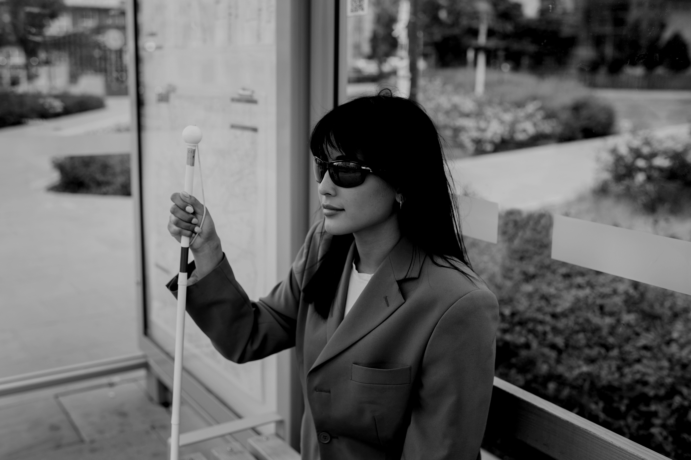
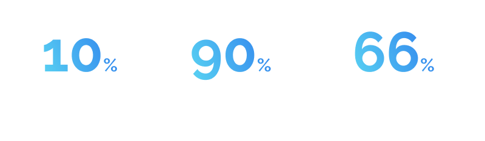
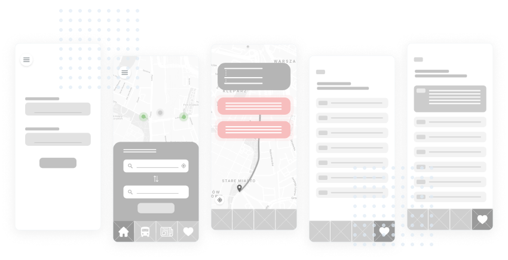
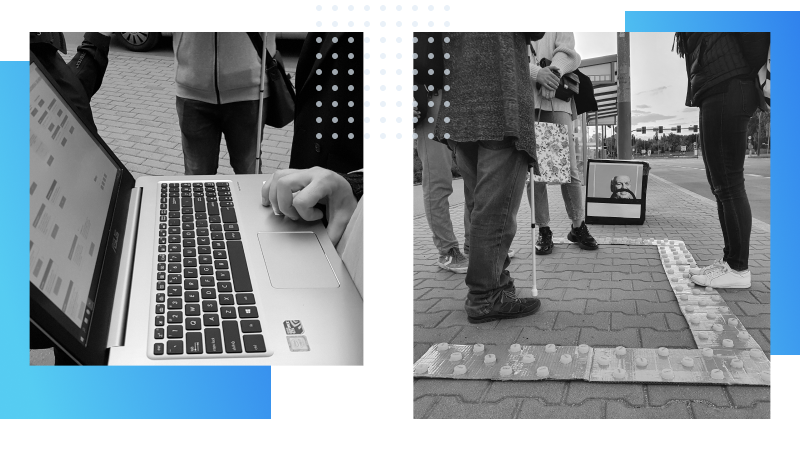

How to help blind people navigate through public transport?

Project Description
Moovit is one of the most accessible and popular apps for checking out public transport connections. As the UX Bats team, along with our partner Miquido, we were required to discover even more ideas on how to use existing solution to cover other users needs.
ProblemWhat digital tool can help blind people in their daily movement around the city?
SolutionAdding new functionalities to an already existing, accessible app (Moovit)
Challenge
Through vision, we receive over 80% of the information about the world around us. How do blind people deal with public spaces? What tools does the contemporary world provide them with? Our team was assigned the difficult task of creating a digital product for people with visual impairments that would help them navigate around town. We had no idea how much knowledge we would need to acquire before we could even begin the design process!

Research
On the market, there are plenty of apps that aim to improve the lives of individuals with visual impairment. However, these apps often fall short due to the following reasons:
- Lack of a defined business model
- Lack of consistency in municipal infrastructure: pavement solutions, tactile pavings, directional or guidance tactile, and wayfinding
- There are barely any legal regulations regarding standards, for example: pathways for the visually impaired
The initial phase of work on the product involved conducting research with potential users. The concept of helping the visually impaired get around the city was completely new to us. However, after 25 hours of conversations, we had an almost clear vision of our product (or so we believed at the time!).
We have identified several concrete facts from the conversations we conducted. Blind people do not desire another application solely targeted at the visually impaired. They want inclusive products that they can use on their phones. They do not want any additional devices that would make it harder to navigate the city. Additionally, they warmly welcome any facilities in the public space.
After completing this phase of research, we made the decision to narrow down the target group to just blind people. People with visual impairments have completely different problems.
Problems
We identified a group of issues related to blind people using public transportation and focused our subsequent work on addressing those problems.

Pivots
User Journey Map, Value Proposition Canvas, and Eisenhower Matrix allowed us to generate three ideas for products that could potentially address our users.
Unfortunately, two of them turned out to be too big to implement and they did not address one of the major issues faced by the blind - the need to install an additional app on their phone. After several iterations, we finally decided to redesign the Moovit app, a popular tool utilized by visually impaired individuals for navigating the city during their travels.

Design
Based on the mapped-out flow and wireframes, we have created the final design of the Moovit app. We have added push notifications, additional settings specifically designed for visually impaired individuals, and a scanner for nearby vehicles.
Additionally, we enhanced the entire process with onboarding. Thanks to it, users can discover the new functionalities of the familiar app and learn that at every stop, there is a service design element waiting for them - safe zone.

Usability Testing
Conducting reliable research was very difficult due to the lack of prototype support for screen readers.
We created a prototype in Adobe XD - the app allows users to play prerecorded audio. In order to conduct research, we recorded voice notifications using a speech synthesiser and created a dashboard to manage them. The blind person was using the standard Moovit app during the tests and we played the notifications at specific moments.

The location for research was always a pavement or a bus stop. We had a Bluetooth speaker that our respondents could hang around their necks or hold close to their ears
We have even created elements of Service Design! Not only that, but we crafted a prototype of Safe Zone using cardboard and bottle caps. The prototype was designed to be tactile, allowing it to be sensed using a white stick and feet. We constructed a bus out of a cardboard box to simulate its arrival at the bus stop.
Summary
Usability testing with a visually imparted view provides us even more insight of the product we have made. All the tested users were extremely impressed, especially in fact of the lack of implementation. However, we have identified opportunities to improve the application following the gathered feedback.
- We decided not to implement the initial idea of having certain notifications appear automatically for the first 2 times after updating the app.
- The basic version was expanded to include more detailed function descriptions for those who need them ("Learn more" button on the screen)
- We have rewritten all notifications, shortening them to the maximum and changing the vocabulary.
- We have kept this option available and adjusted the time and distance ranges (a topic for another iteration - what works best for the user)